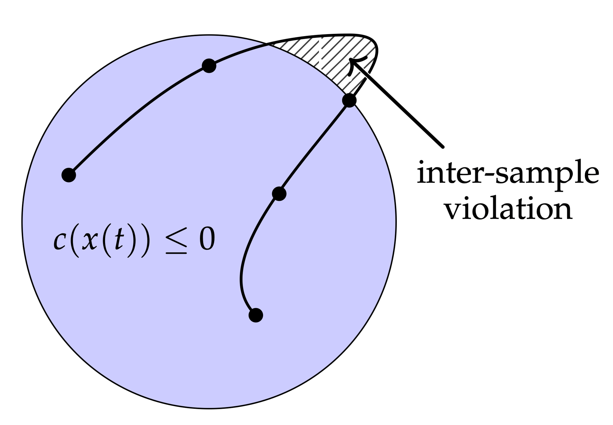

Continuous-Time Successive Convexification
Trajectory optimization with guarantees between the timesteps.
Overview
Numerical trajectory optimization uses a discrete grid of time points. A flight vehicle moves between those points. A trajectory can satisfy constraints at the grid nodes and still violate them between samples, for example by clipping a glideslope, exceeding a speed limit, or grazing an obstacle mid-segment.
This project extends successive convexification (SCvx), the lab's framework for solving nonconvex optimal control through a sequence of convex problems. The extension guarantees constraints in continuous time, not only at discretization nodes.
The result, including the award-winning AutoSCvx line of work, is trajectory optimization that is both computationally tractable and safe at every instant of flight.
Results & media
The project is about eliminating the gap between node-level feasibility and continuous-time safety.
Constraints between nodes
CT-SCVX reformulates path constraints so the trajectory remains safe between discretization points. The method combines generalized time dilation, multiple shooting, exact penalization, and a prox-linear sequential convex program.
- GuaranteeContinuous-time constraint satisfaction without dense mesh refinement.
- ExamplesObstacle avoidance, 6-DoF rocket landing, 3-DoF landing, and grasp optimization.
- CodeOpen-source repository for the arXiv 2024 release.
